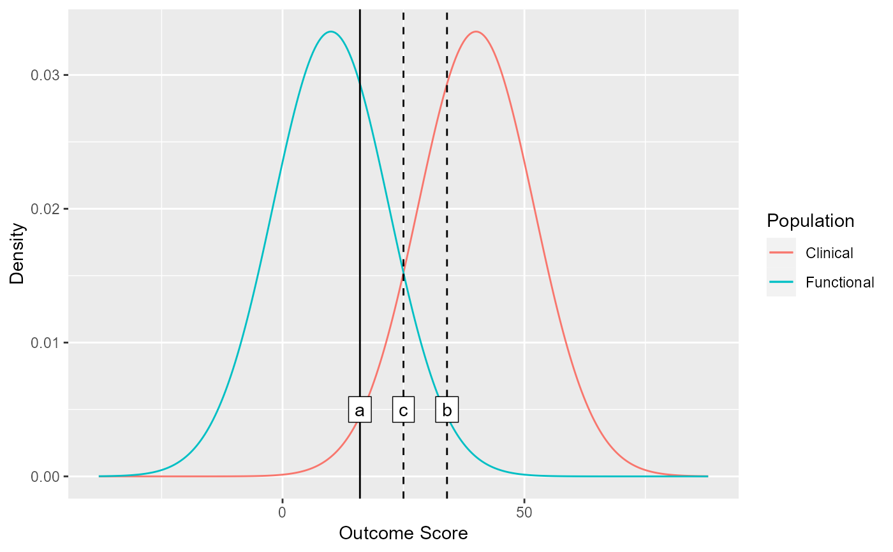
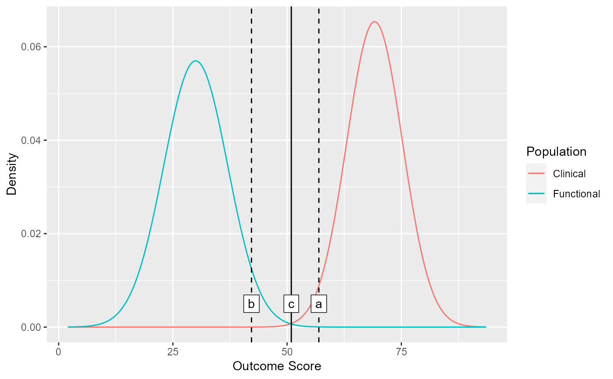

Check the Clinical Significance Cutoff Based on Population Descriptives
Source:R/check_cutoff.R
check_cutoff.RdCheck the Clinical Significance Cutoff Based on Population Descriptives
Arguments
- object
An object of class clinisig. This is optional and can be used to visualize cutoffs after conducting a clinical significance analysis.
- m_clinical
Mean of clinical population
- sd_clinical
SD of clinical population
- m_functional
M of functional population
- sd_functional
SD of functional population
- type
Cutoff type. Available are
"a","b", and"c". Defaults to"a"(see details for further information in which cutoff to choose)- better_is
Which direction means a better outcome for the employed outcome? Available are
"lower"(lower outcome scores are desirable, the default) and"higher"(higher outcome scores are desirable)
- resolution
Curve resolution (number of points to be drawn). This may improve smoothness of highly peaked curves.
Examples
# Check cutoff with manually specified values
check_cutoff(m_clinical = 40, sd_clinical = 12, m_functional = 10, sd_functional = 12)

# Or check the cutoff after you conducted a clinical significance analysis
results <- jacobson_1989 %>%
clinical_significance(
id = subject,
time = time,
outcome = gds,
pre = "pre",
reliability = 0.80,
m_functional = 30,
sd_functional = 7,
type = "c"
)
check_cutoff(results)
